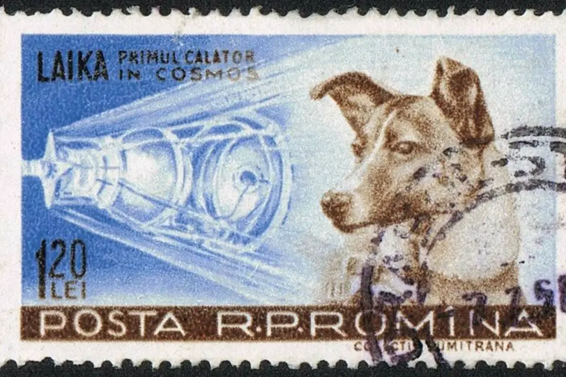
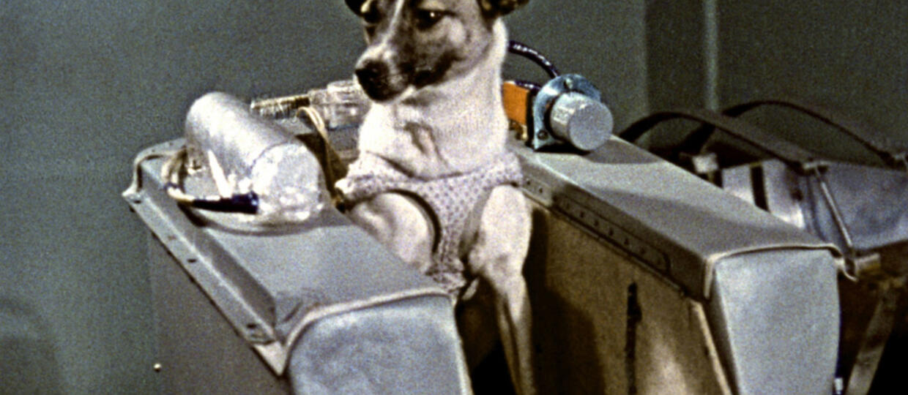
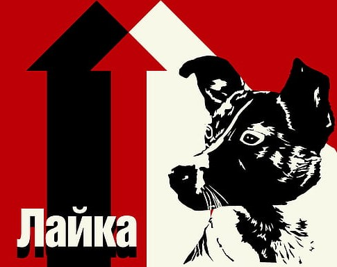
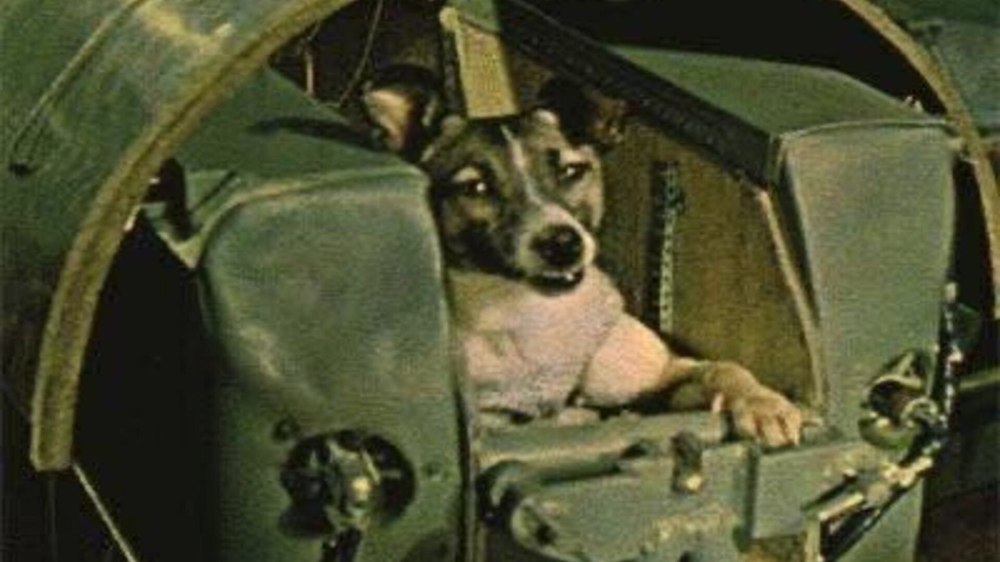
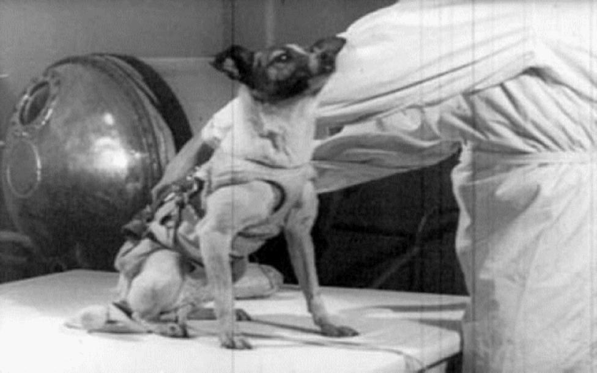
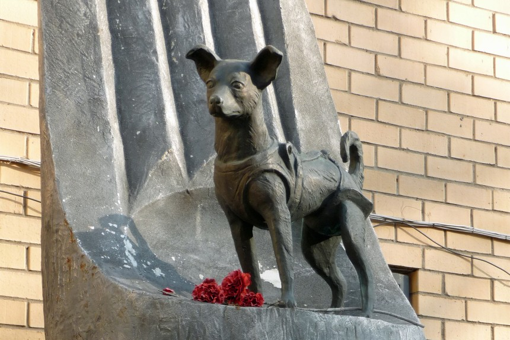

Łajka, pies, który stał się ikoną eksploracji kosmosu
Suka psa, mieszańca, wystrzelona 3 listopada 1957 na orbitę okołoziemską w radzieckim sztucznym satelicie  Sputnik 2, kosmonautka Łajka miała wówczas około dwóch lat. Okres szczenięcy przeżyła na ulicach Moskwy. Po jej schwytaniu przekazano ją do Instytutu Medycyny Lotniczej w celu wykorzystania w badaniach związanych z eksploracją kosmosu. Tuż przed lotem ważyła około 6 kilogramów. Łajka była pierwszym żywym stworzeniem umieszczonym na orbicie okołoziemskiej, chociaż nie pierwszym w przestrzeni kosmicznej jako takiej. Związek Socjalistycznych Republik Radzieckich i Stany Zjednoczone już wcześniej eksperymentowały z wysyłaniem zwierząt w kosmos. W założeniach eksperymentu nie przewidywano sprowadzenia psa z powrotem na Ziemię. Łajka poniosła śmierć w czasie lotu.
Przygotowania do lotu
Pracownicy radzieckiego Instytutu Medycyny Lotniczej do lotu Sputnika 2 przygotowywali 10 psów. Trening polegał na przyzwyczajaniu zwierząt do przebywania w ciasnym pomieszczeniu zasobnika i w ubraniu ochronnym. Była to lekka kamizelka z metalowymi łańcuszkami, które ograniczały psu możliwość ruchu. Pies mógł stać, siedzieć i leżeć, ewentualnie przesunąć się nieco do przodu lub do tyłu. Czas przebywania w takich warunkach był stopniowo zwiększany aż do 20 dni. Tylko te psy, które znosiły takie warunki mogły przystąpić do dalszych zadań. W kolejnym etapie badano reakcje psów na wpływ czynników związanych z lotem, między innymi przyspieszenia, wibracji i hałasu. Z początkowej grupy wybrano sześć psów, które przystąpiły do testów w hermetycznej kapsule. Badano reakcje zwierząt na zmiany ciśnienia, temperatury i składu gazów (stężenie tlenu i dwutlenku węgla). W kolejnym etapie przyzwyczajano zwierzęta do urządzenia umożliwiającego wypróżnianie. Pokarm i woda były dozowane w ilościach zaspokajających podstawowe potrzeby organizmu. Prace nad kosmiczną budą dla psa rozpoczęto 10 października 1957. Pojemnik był oparty na konstrukcji, której używano wcześniej do wysyłania psów na loty suborbitalne. Pojemnik, przypominający beczkę, został zmodyfikowany tak, aby pasażer mógł przeżyć w nim kilka dni, a nawet tygodni. Modyfikacja obejmowała zamontowanie automatycznego urządzenia do podawania karmy, systemu dostarczania i regulowania dopływu tlenu oraz chemicznego usuwania pary wodnej i dwutlenku węgla.
Dlaczego akurat Łajka
Każdy naukowiec pracujący w programie treningowym sporządził własny raport o fizjologicznych reakcjach każdego psa w poszczególnych etapach treningu. Wyniki zestawiono i porównano z wynikami badań weterynaryjnych. Ostateczny wybór padł na Kudriawkę (Kędziorek), czyli Łajkę, choć osiągnięte przez nią wyniki nie należały do najlepszych. Była spokojna, dobrze się przystosowywała do zmieniających się warunków, ale przynajmniej jeden z pozostałych psów – Albina – był lepszym kandydatem do lotu. Dobre wyniki osiągała też Muszka, której przypadła rola psa technicznego. Miała zastępować Łajkę przy testowaniu ekwipunku i sprzętu podtrzymującego życie. Albina była lubiana przez personel, mogła się poszczycić osiągnięciami (odbyła dwa wcześniejsze loty eksperymentalne), lecz urodziła miot szczeniąt i naukowcy nie chcieli jej od nich oddzielać.
Łajka i jej lot w przestrzeń kosmiczną
Łajka została wysłana w przestrzeń kosmiczną w celu przeprowadzenia na niej eksperymentów biomedycznych przed planowaną kosmiczną podróżą pierwszego człowieka. Umieszczono ją w hermetycznie zamkniętym, aluminiowym pojemniku, z zapasem tlenu i jedzenia. Badania przeprowadzone w czasie startu, lotu na orbitę oraz w stanie nieważkości nie wykazały nieprawidłowości w przebiegu fizjologicznych funkcji organizmu psa. Przyrządy wykazały silny stres spowodowany prawdopodobnie nadmiernym hałasem, wibracjami i przyspieszeniem. Nie stwierdzono negatywnego wpływu promieniowania kosmicznego i przebywania w stanie nieważkości.  Pierwotnie, ze względów propagandowych, podano, że pies przeżył kilka dni, a jego śmierć była spowodowana hipoksja. Prawdę ujawniono w 2002: Łajka zginęła prawdopodobnie po około (źródła podają różny czas) siedmiu godzinach lotu z powodu przegrzania i stresu. Nieodczepienie się rakiety nośnej Sputnik 8K71PS spowodowało wzrost temperatury wewnątrz kapsuły do ponad 40 °C.  Od początku nie planowano sprowadzenia psa na Ziemię – było to trudne technicznie i jednocześnie niekonieczne dla osiągnięcia zamierzonego sukcesu propagandowego. Dziesięciodniowy plan lotu Sowieci ogłosili publicznie w jakiś czas po wystrzeleniu satelity, a więc już po śmierci zwierzęcia. Jeżeli suczka przeżyłaby pierwszy etap lotu, po 10 dniach miała otrzymać zatrutą porcję pożywienia. Tylko na taki okres wystarczał zapas żywności i tlenu, ograniczony pojemnością kapsuły i nośnością rakiety. Sława Łajki bierze się z jej pierwszeństwa w erze podboju kosmosu, chociaż tak naprawdę pierwszymi żywymi organizmami poza atmosferą były nasiona różnych gatunków zbóż wystrzelone w rakiecie V2 w 1946 i muszki owocowe wysłane w 1947. Łajka nie była jedynym psem, który poniósł śmierć w początkach tej ery – nie mówiąc o innych zwierzętach, jak myszy, żółwie, czy małpy – na przykład wraz ze Sputnikiem 6 (misja Korabl-Sputnik 3) spłonęły w atmosferze dwa inne psy, Pczołka (pol. Pszczółka) i Muszka.
Pomnik Łajki
W kwietniu 2008 Łajka została uhonorowana dwumetrowym pomnikiem przedstawiającym rakietę kosmiczną przechodzącą w ludzką dłoń, na której stoi Łajka. Pomnik znajduje się nieopodal Państwowego Instytutu Badawczego Medycyny Wojskowej Rosyjskiego Ministerstwa Obrony w Moskwie.
Słowo łajka oznacza grupę psich ras, z którą Łajka najprawdopodobniej nie miała wiele wspólnego, choć dopatrywano się w niej podobieństw do samojeda. Pies-kosmonauta pierwotnie wabił się Kudriawka (Kędziorek) lub Limonczik (Cytrynka). Dopiero tuż przed lotem suczce nadano właśnie imię Łajka, co w języku rosyjskim oznacza „szczekaczka” lub „oszczekiwacz”. Amerykanie nazywali Łajkę Muttnik (mutt – ang. kundel), żartując z nazwy Sputnik.